Timeføring er en systematisk prosess for å registrere, spore og administrere arbeidstid som ansatte bruker på ulike oppgaver, prosjekter eller kunder. I norsk forretningssammenheng omfatter timeføring ikke bare den faktiske registreringen av timer, men også den påfølgende behandlingen av disse dataene for lønn og personaladministrasjon, fakturering, kostnadsberegning og prosjektstyring. Moderne timeføring er integrert med digitale systemer som automatiserer datainnsamling og gir verdifull innsikt i produktivitet, ressursbruk og lønnsomhet.
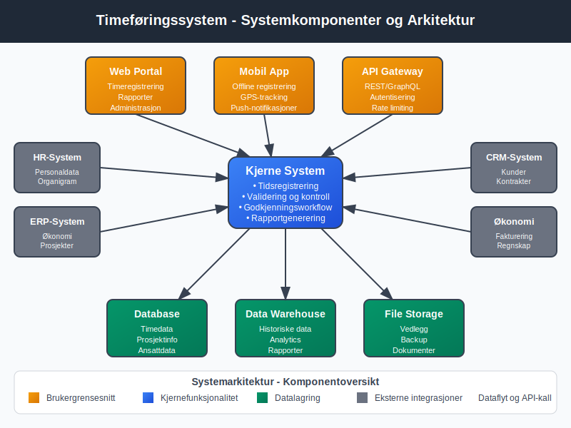
Seksjon 1: Grunnleggende Timeføringskonsepter
1.1 Definisjoner og Terminologi
Timeføring består av flere komponenter som sammen skaper et helhetlig system for tidsadministrasjon:
- Tidsregistrering - Selve prosessen med å registrere start- og sluttidspunkt for arbeid
- Timepost - En enkelt registrering av tid brukt på en spesifikk aktivitet eller prosjekt
- Timekoder - Kategorisering av tid etter type arbeid, prosjekt eller kostnadssted
- Rapporteringsperiode - Tidsintervall for sammenstilling og rapportering av timedata
- Fakturerbar tid - Timer som kan belastes direkte til kunder eller prosjekter
- Overhead-tid - Administrativ tid som ikke kan faktureres direkte
1.2 Timeføringens Rolle i Regnskapet
Timeføring er tett integrert med bokføring og fungerer som grunnlag for:
| Regnskapsområde | Timeføringens Bidrag |
|---|---|
| Lønnsregnskap | Grunnlag for lønnsbetaling og overtidskompensasjon |
| Kostnadsfordeling | Allokering av personalkostnader til prosjekter og kostnadssteder |
| Fakturering | Dokumentasjon for tidbasert fakturering til kunder |
| Budsjettering | Historiske data for kapasitetsplanlegging og kostnadsestimering |
| Lønnsomhetsanalyse | Sammenligning av tidsinnsats med inntekter per prosjekt |
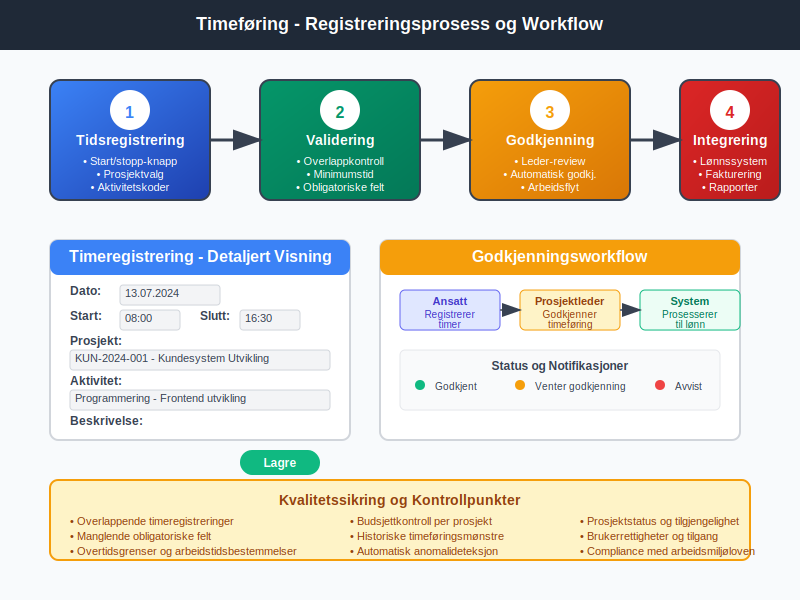
Seksjon 2: Juridiske Rammeverk og Compliance
2.1 Arbeidsmiljøloven og Timeføring
Norsk arbeidsmiljølov stiller spesifikke krav til dokumentasjon av arbeidstid:
- Arbeidstidsbestemmelser - Maksimal arbeidsuke på 40 timer i gjennomsnitt
- Overtidsregulering - Dokumentasjon av overtid og kompensasjon
- Pauseregler - Registrering av obligatoriske pauser og hvileperioder
- Søndagsarbeid - Spesielle krav til dokumentasjon og godkjenning
2.2 Skattemessige Implikasjoner
Timeføringssystemer må understøtte skattemessige krav for:
- Kildeskatt - Riktig beregning av tabelltrekk basert på faktiske arbeidstimer
- Overtidstillegg - Skattemessig behandling av overtidsgodtgjørelse
- Reisekostnader - Dokumentasjon av arbeidstid på ulike arbeidsssteder
- Feriepenger - Korrekt beregning basert på opptjent arbeidstid
2.3 GDPR og Personvern
Timeføringssystemer behandler personopplysninger og må følge GDPR-krav:
- Datainnsamling - Kun nødvendige opplysninger for timeføring
- Lagringstid - Definerte retningslinjer for hvor lenge timedata oppbevares
- Tilgangsrettigheter - Ansattes rett til å se og korrigere egne timedata
- Sikkerhet - Kryptering og sikker lagring av sensitive timedata
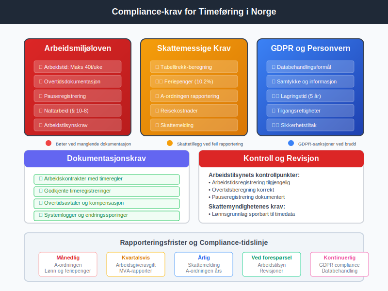
Seksjon 3: Timeføringssystemer og Teknologi
3.1 Tradisjonelle Timeføringssystemer
Historisk sett har timeføring utviklet seg fra manuelle til digitale systemer:
- Stemplingsur - Fysiske systemer for registrering av inn- og utstempling
- Timesedler - Papirbaserte skjemaer for manuell tidsregistrering
- Excel-baserte systemer - Digitaliserte regneark for timeføring
- Dedikerte timeføringsprogrammer - Spesialisert programvare for tidsadministrasjon
3.2 Moderne Digitale Løsninger
Dagens timeføringssystemer tilbyr avansert funksjonalitet:
Sanntidsregistrering:
- Automatisk start/stopp av tidsregistrering
- GPS-basert posisjonering for mobilt arbeid
- Integrasjon med kalendersystemer
- Automatisk kategorisering av aktiviteter
Prosjektintegrasjon:
- Kobling til prosjektstyringssystemer
- Automatisk allokering til kostnadssentere
- Budsjettsporing og varsling
- Rapportering per prosjektfase
Mobilteknologi:
- Dedikerte apper for timeregistrering
- Offline-funksjonalitet for områder uten nettdekning
- Push-notifikasjoner for timeføringspåminnelser
- Biometrisk autentisering for sikkerhet
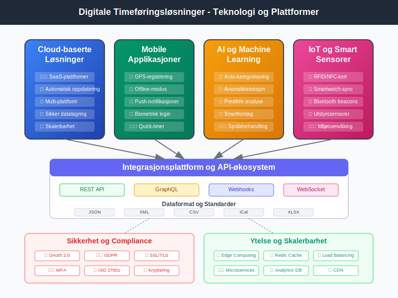
3.3 Integrasjon med Andre Systemer
Moderne timeføringssystemer integreres med:
| System | Integrasjonsmuligheter |
|---|---|
| ERP-systemer | Automatisk overføring til hovedbok og lønnsmodul |
| CRM-systemer | Kobling av timebruk til kundeprosjekter og aktiviteter |
| Faktureringssystemer | Automatisk generering av tidbaserte fakturaer |
| HR-systemer | Integrasjon med ferie- og sykefraværsregistrering |
| Business Intelligence | Dataoverføring til analyseverktøy og dashboards |
Seksjon 4: Implementering og Beste Praksis
4.1 Planlegging av Timeføringssystem
Vellykket implementering krever grundig planlegging:
Behovsanalyse:
- Kartlegging av eksisterende timeføringsprosesser
- Identifisering av forbedringspotensial
- Definering av krav og målsetninger
- Evaluering av tekniske muligheter og begrensninger
Organisatoriske Faktorer:
- Antall ansatte og arbeidsstasjoner
- Geografisk spredning av virksomheten
- Kompleksitet i prosjektstruktur
- Integrasjonsbehov med eksisterende systemer
Prosessdesign:
- Standardisering av timeføringsprosedyrer
- Definering av timekoder og kategorier
- Etablering av godkjennings- og kontrollrutiner
- Utvikling av rapporteringsrutiner
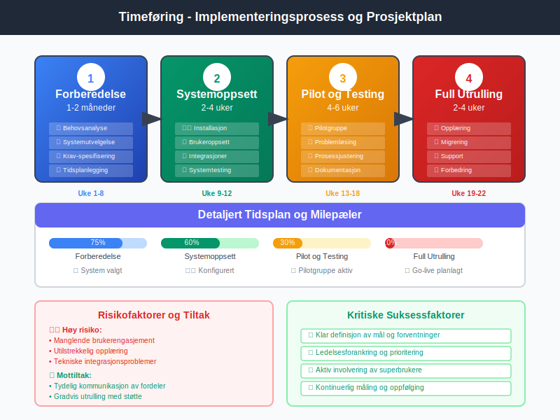
4.2 Opplæring og Endringsledelse
Suksessful timeføring krever engasjerte medarbeidere:
- Kommunikasjon - Tydelig formidling av formål og fordeler
- Opplæring - Grundig opplæring i systembruk og prosedyrer
- Støtte - Kontinuerlig brukersstøtte og problemløsing
- Insentiver - Motivasjon gjennom positive konsekvenser av god timeføring
4.3 Kvalitetssikring og Kontroll
Pålitelig timeføring krever systematisk kvalitetskontroll:
Daglige Kontroller:
- Validering av timeregistreringer mot arbeidsplaner
- Kontroll av overtidsregistreringer
- Verifisering av prosjektallokering
- Sjekk av manglende eller ufullstendige registreringer
Periodiske Gjennomganger:
- Månedlig sammenligning med lønnsdata
- Kvartalsvis analyse av produktivitetstrender
- Årlig evaluering av systemeffektivitet
- Benchmarking mot bransjestandard
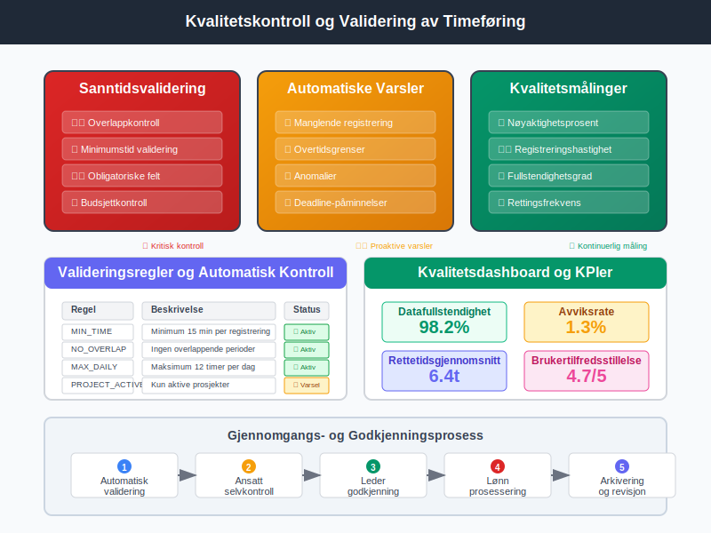
Seksjon 5: Rapportering og Analyse
5.1 Standard Timeføringsrapporter
Timeføringssystemer genererer ulike rapporter for forskjellige formål:
Operasjonelle Rapporter:
- Daglige timerapporter per ansatt
- Ukentlige prosjektsammendrag
- Månedlige overtidsrapporter
- Ferieopptjenings- og feriebruksrapporter
Analytiske Rapporter:
- Produktivitetsanalyse per ansatt og team
- Prosjektlønnsomhet og budsjettavvik
- Kapasitetsutnyttelse og ressursplanlegging
- Historiske trender og prognoser
Compliance-rapporter:
- Arbeidstidsrapporter for myndighetskontroll
- Overtidsrapporter for arbeidstilsynet
- Lønnsgrunnlag for skattemelding
- Dokumentasjon for revisjonsformål
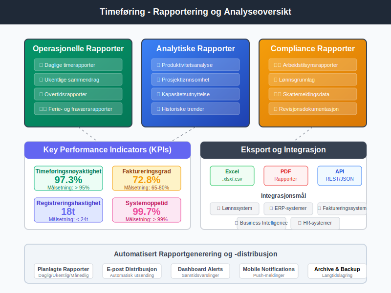
5.2 Key Performance Indicators (KPIs)
Viktige måltall for timeføring inkluderer:
| KPI | Beskrivelse | Målsetning |
|---|---|---|
| Timeføringsnøyaktighet | Andel korrekt registrerte timer | > 95% |
| Faktureringsgrad | Andel fakturerbare timer av totale timer | 65-80% |
| Registreringshastighet | Tid fra utført arbeid til registrering | < 24 timer |
| Systemoppetid | Tilgjengelighet av timeføringssystem | > 99% |
| Brukeradopsjon | Andel ansatte som bruker systemet aktivt | 100% |
5.3 Prediktiv Analyse og AI
Avanserte timeføringssystemer bruker kunstig intelligens for:
- Automatisk kategorisering - AI lærer å klassifisere timeinnførsler
- Anomalideteksjon - Identifisering av unormale timeføringsmønstre
- Prognostisering - Forutsigelse av prosjektferdigstillelse og ressursbehov
- Optimaliseringsforslag - Anbefalinger for forbedret ressursallokering
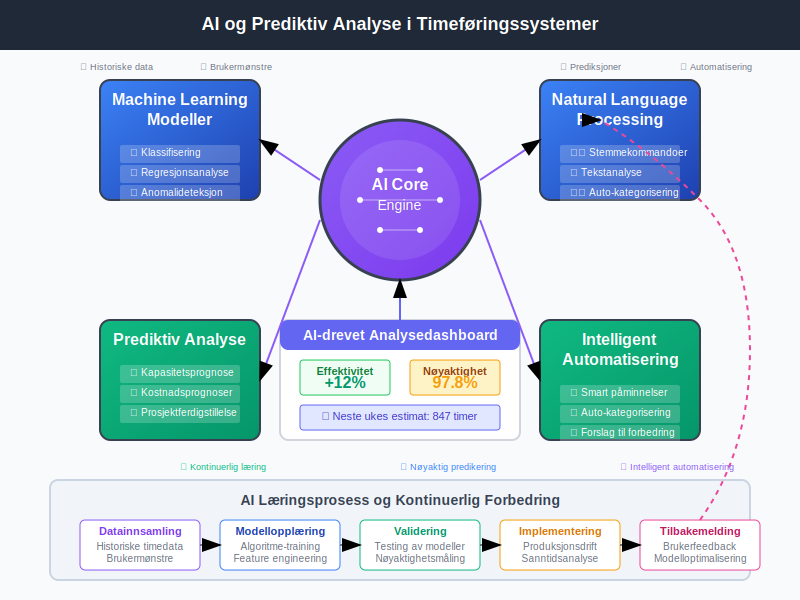
Seksjon 6: Bransjespesifikke Tilpasninger
6.1 Konsulentbransjen
Konsulentselskaper har spesielle krav til timeføring:
- Klientfakturering - Detaljert sporing av tid per klient og prosjekt
- Reisehåndtering - Registrering av reisetid og reisekostnader
- Kompetansesporing - Kobling av timebruk til spesifikke fagområder
- Budsjettovervåking - Kontinuerlig sammenligning med prosjektbudsjetter
6.2 Bygge- og Anleggsbransjen
Byggebransjen krever robuste timeføringssystemer som håndterer:
- Værforhold - Registrering av værpåvirkning på arbeidsproduktivitet
- Sikkerhet - Dokumentasjon av sikkerhetsopplæring og -prosedyrer
- Materialhåndtering - Integrering med lagerstyring
- Subkontraktører - Timeføring for eksterne arbeidstakere
6.3 Helsesektoren
Helseinstitusjonene har strenge krav til timeføring på grunn av:
- Pasientbilling - Dokumentasjon av tid brukt per pasient
- Personalplanlegging - Sikring av tilstrekkelig bemanning
- Kompetansedokumentasjon - Sporing av kontinuerlig medisinsk utdanning
- Akuttberedskap - Registrering av beredskapstid og utrykningstid
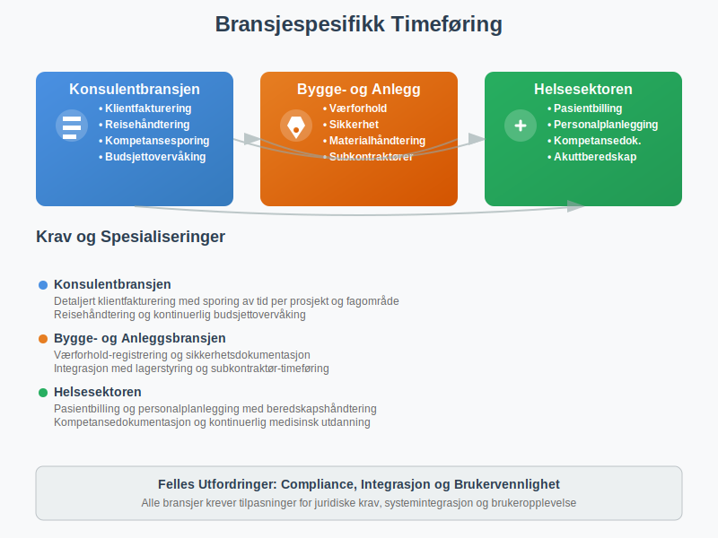
Seksjon 7: Utfordringer og Løsninger
7.1 Vanlige Implementeringsutfordringer
Tekniske Utfordringer:
- Integrasjon med legacy-systemer
- Datamigrasjon fra gamle systemer
- Skalerbarhet og ytelse
- Sikkerhet og personvern
Organisatoriske Utfordringer:
- Motstand mot endring blant ansatte
- Manglende ledelsesforankring
- Utilstrekkelig opplæring
- Uklare prosesser og ansvarsfordeling
7.2 Løsningsstrategier
Tekniske Løsninger:
- Gradvis migrering og parallellkjøring
- Cloud-baserte løsninger for skalerbarhet
- API-basert integrasjon med eksisterende systemer
- Robust backup- og gjenopprettingsløsninger
Endringsledelse:
- Tydelig kommunikasjon av fordeler og mål
- Involvering av nøkkelpersoner i implementeringen
- Kontinuerlig opplæring og støtte
- Positive insentiver for korrekt timeføring
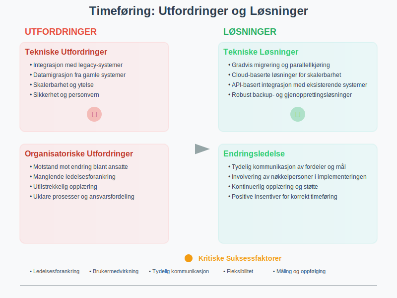
Seksjon 8: Fremtidens Timeføring
8.1 Teknologiske Trender
Automatisering og AI:
- Automatisk tidsregistrering basert på aktivitetsmønstre
- Prediktiv analyse for ressursplanlegging
- Intelligent prosjektallokering og kategorisering
- Chatbot-assisterte timeføringsgrensesnitt
Internet of Things (IoT):
- Sensorer for automatisk registrering av tilstedeværelse
- Smartwatch-integrasjon for sømløs tidsregistrering
- Beacons for posisjonssporing i større bedrifter
- Automatisk registrering basert på utstyrsbruk
8.2 Nye Arbeidsformer
Fremtidens timeføring må tilpasse seg nye arbeidsformer:
- Fjernarbeid - Timeføring for hjemmekontor og hybride arbeidsmodeller
- Fleksible arbeidstider - Støtte for flexitid og komprimerte arbeidsuke
- Gig Economy - Timeføring for freelancere og konsulenter
- Prosjektbasert arbeid - Agile arbeidsmetoder og kortere prosjektsykluser
8.3 Bærekraft og Samfunnsansvar
Timeføring blir viktigere for bærekraftsmål:
- Miljørapportering - Sporing av karbonavtrykk fra arbeidstransport
- Velvære - Overvåking av work-life-balance og stressnivåer
- Diversitet - Analyse av arbeidsfordeling på tvers av demografiske grupper
- Samfunnsverdi - Måling av samfunnsbidrag gjennom pro bono-arbeid
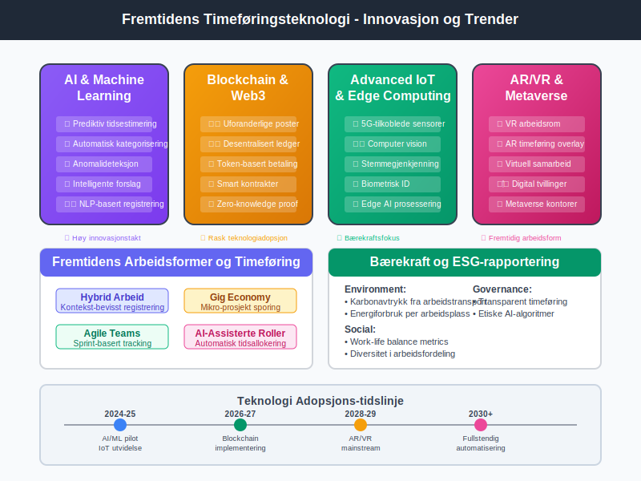
Seksjon 9: Implementeringsguide
9.1 Trinn-for-trinn Implementering
Fase 1: Forberedelse (1-2 måneder)
- Gjennomfør behovsanalyse og krav-spesifisering
- Evaluér og velg timeføringssystem
- Planlegg integrasjon med eksisterende systemer
- Utvikle implementeringsplan og tidsramme
Fase 2: Systemoppsett (2-4 uker)
- Installer og konfigurer timeføringssoftware
- Oppsett av brukere, roller og tilganger
- Konfigurer timekoder og prosjektstrukturer
- Test systemfunksjonalitet og integrasjoner
Fase 3: Pilot og Testing (4-6 uker)
- Kjør pilot med utvalgte ansatte og prosjekter
- Identifiser og løs tekniske problemer
- Juster prosesser basert på pilotfeedback
- Dokumenter endelige prosedyrer og retningslinjer
Fase 4: Full Utrulling (2-4 uker)
- Gjennomfør omfattende brukeropplæring
- Migrer alle ansatte til nytt system
- Implementer support- og vedlikeholdsrutiner
- Etabler kontinuerlige forbedringsprocesser
9.2 Kritiske Suksessfaktorer
- Ledelsesforankring - Tydelig støtte og prioritering fra toppledelsen
- Brukermedvirkning - Aktiv involvering av ansatte i planlegging og utvikling
- Tydelig kommunikasjon - Kontinuerlig informasjon om fremgang og fordeler
- Fleksibilitet - Evne til å justere løsning basert på brukerfeedback
- Måling og oppfølging - Systematisk evaluering av resultater og forbedringer
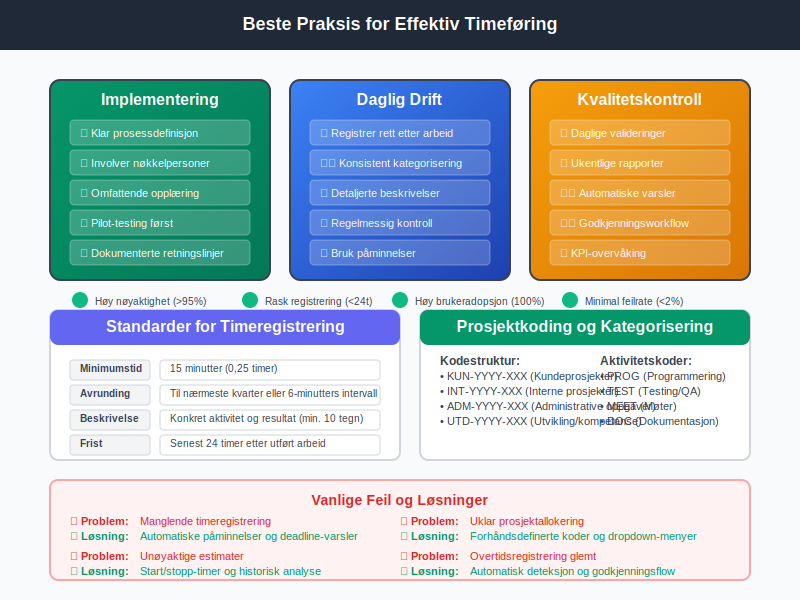
Konklusjon
Timeføring er en kritisk forretningsprosess som påvirker alt fra lønnsadministrasjon til prosjektlønnsomhet og strategisk planlegging. Moderne digitale løsninger tilbyr betydelige muligheter for å automatisere rutineoppgaver, forbedre nøyaktighet og gi verdifull innsikt i organisasjonens produktivitet og ressursbruk.
Suksessful implementering av timeføringssystemer krever en helhetlig tilnærming som kombinerer teknisk ekspertise med endringsledelse og kontinuerlig forbedring. Organisasjoner som investerer i robuste timeføringssystemer vil være bedre posisjonert for å møte fremtidens krav til transparens, effektivitet og strategisk ressursplanlegging.
Gjennom integrasjon med moderne teknologier som AI, IoT og cloud computing, vil timeføring fortsette å utvikle seg fra en administrativ nødvendighet til et strategisk verktøy for organisatorisk optimalisering og konkurransefordel.